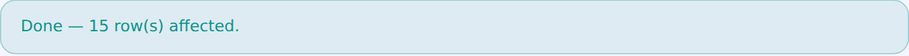
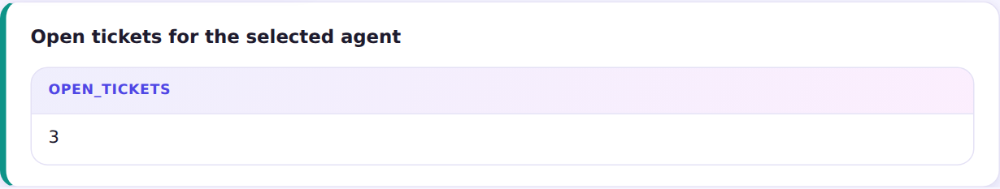

Actions are pgapp's PL/SQL analog: named Rust modules in src/actions/,
called from a page as a button. The shipped run_query module executes a named query raw
— a plain UPDATE works — and its outcome comes back as a banner.
Dynamic actions are declarative client-side behavior, dispatched by the DB-stored
runtime.js: in this form, picking High priority auto-checks urgent; unchecking
urgent hides the notes field; and choosing an agent re-fetches the region below with
:agent bound to the selection — no page reload, no hand-written JS.
action "Close all non-urgent open tickets" calls run_query (query: "close_nonurgent") on change of priority { set urgent to "pgapp.getItem('priority') === 'High'" } on change of agent { refresh agent_load }

